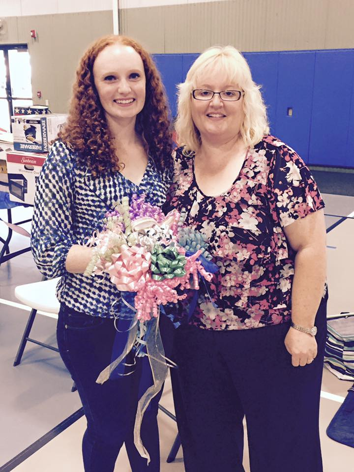

Meet Jean Brown
 Jean Brown is a passionate teacher and pastor who loves being a part of her students’ lives. She takes a special interest into the struggles of impoverished students and those with difficult home lives. She began her teaching career teaching the children of migrant workers during the summer in Brockport, NY. She then began to teach preschoolers for a local preschool. When she moved to Jamestown, NY she became a teacher at HeadStart which provides preschool to families with low incomes. In her free time, she enjoys going to the movies with friends and family, volunteering at church, relaxing on the patio with a good book, and going on adventures.
| '68 | '78 | '88 | '98 | '08 | present |